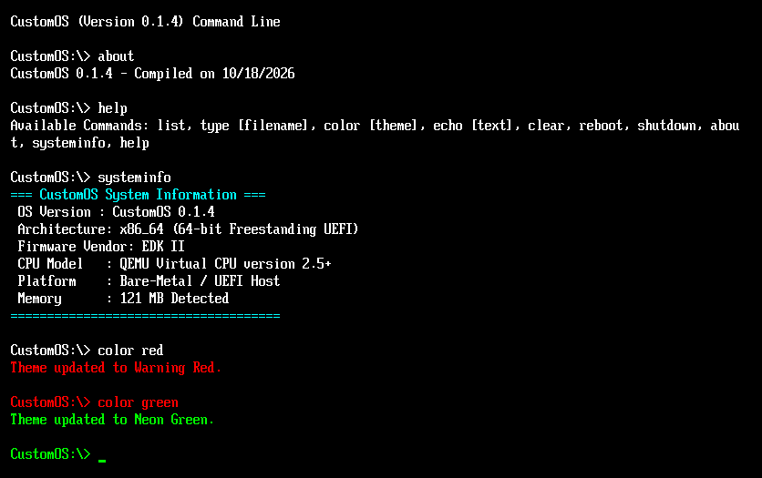
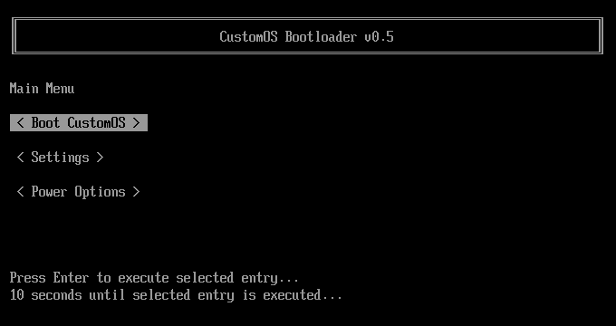

A freestanding 64-bit C operating system featuring an independent UEFI stage-1 bootloader and interactive kernel shell payload.

Stage-1 bootx64.efi featuring a full graphical UI menu, customizable countdown timers, runtime settings, and raw disk protocol file fetching.
Stage-2 C kernel compiled and linked directly into a unified standalone payload, locking CPU execution into an interactive shell loop.
Includes low-level x86_64 inline assembly resets, runtime power state toggles, CPUID string generation, and dynamic RAM queries.
Initializes video text modes, presents the multi-screen bootloader interface (Boot CustomOS, Settings, Power Controls), and interfaces with the EFI Simple File System Protocol to locate kernel assets.
Directly boots into a freestanding x86_64 C kernel payload complete with multi-slot command history caching, directory parsing, file printing, and hardware-level power controls.
Explore high-resolution screenshots capturing the boot sequence, configuration menus, and interactive kernel environment.
The standalone UEFI stage-1 bootloader main menu featuring interactive selectors and timeout routines.

The freestanding 64-bit C kernel shell executing system diagnostic queries and real-time color theme modifications.